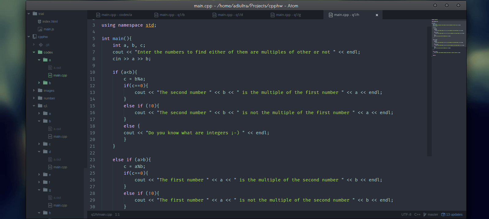
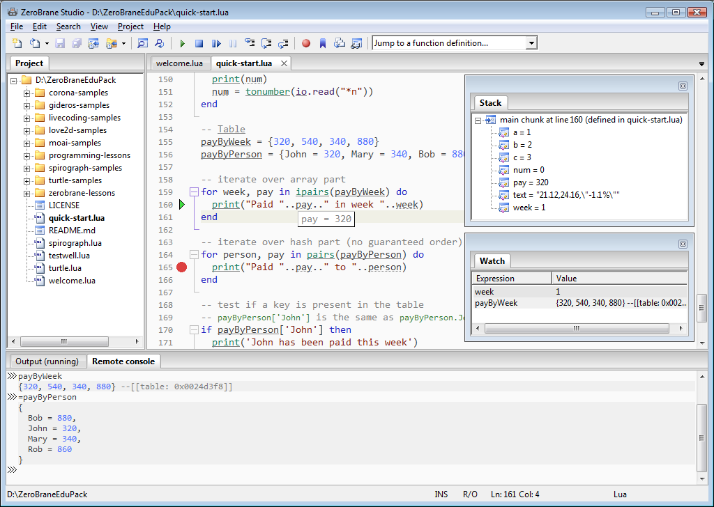
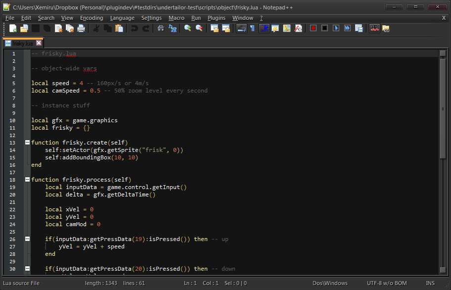
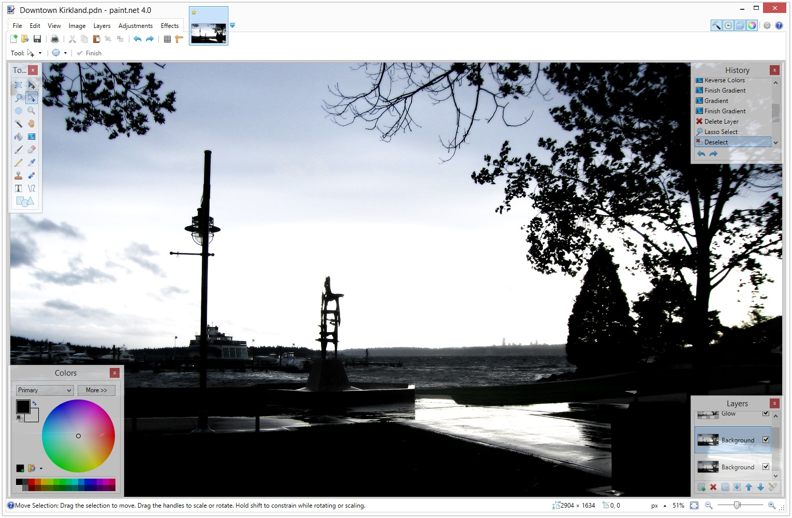
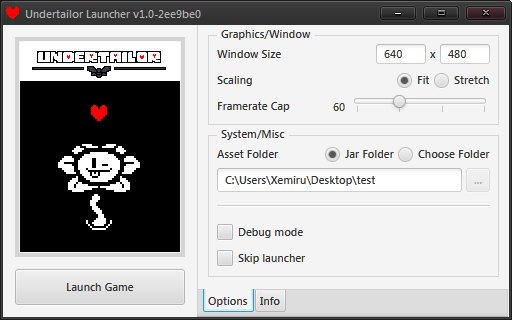

Tools for the Job
Before delving into development, a few essential tools are needed so we can actually create the things we need to make the game work. This involves text utilities for code, and editors for assets.
Basically, you'll need...
- Your favorite code editor, for writing Lua scripts
- Tiled, for creating tilesets and overworld maps
- An image editor, to help create your spritesheets
- TODO: prepare spritesheet editor for public use
Don't know what you want?

Atom, created by the people behind GitHub, is a customizable text editor that can be built up to essentially become an IDE, with the right plugins.

ZeroBrane Studio seems to be a popular choice for people writing in Lua.

If you're not into anything fancy, Notepad++ is a flexible and easy to use editor. *

For image tools, a freeware choice that's very easy to use and has plugin support is Paint.NET. *
* Developer's choice!
Setting up
Once you've gotten your tools, we need to set up our project folder. Our project folder is where we hold all our assets and scripts for the game to load. To set it up, open up the Undertailor launcher (double-click the file).

Make sure Jar Folder is selected, and click Launch Game.
Obviously, nothing's gonna happen on the game, probably because we haven't given anything to it. However, once the game's launched, if it doesn't find its folders in its assigned launch folder, it will make them automatically.